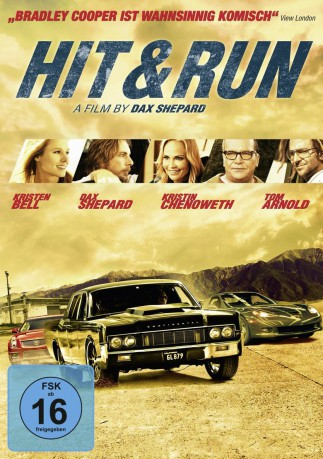

#6859 Hit and Run
 
 IMDB-Wertung: 6.1 / 10
IMDB-Wertung: 6.1 / 10  Metascore: 0
Metascore: 0 
Auf dem ersten Blick sind Charlie (D. Shepard) und Annie (K. Bell) das perfekte Paar. Das ändert sich jedoch, als die beiden eines Tages von zwielichtigen Gestalten überrascht werden und Charlie heftig zugerichtet wird. Daraufhin gesteht er seiner Freundin, dass er nicht der Mann ist, als der er sich ausgibt, sondern im Rahmen des Zeugenschutzprogramms untergetaucht ist, da er gegen seine ehemaligen Partner ausgesagt hat. Diese haben ihn nun aber gefunden, weshalb Charlie und Annie nun gemeinsam in eine neue Zukunft davonlaufen müssen, um vor dem skrupellosen Alex Dmitri (B. Cooper) sicher zu sein ...
Jahr: 2012
Dauer: 100 Minuten
FSK: 16
Land: USA Studio: IITonspuren: DTS - ,
Untertitel: Deutsch,
Auflösung: 1080p (1920x800) Größe: 5560 MB
Genre: Action, Komödie, Liebe
Regisseur: David Palmer, Dax Shepard
Drehbuch: Dax Shepard
Soundtrack:
Darsteller:
 Kristen Bell als Annie Bean
Kristen Bell als Annie Bean Dax Shepard als Yul Perrkins a.k.a. Charles Bronson
Dax Shepard als Yul Perrkins a.k.a. Charles Bronson Tom Arnold als Randy Anderson
Tom Arnold als Randy Anderson Kristin Chenoweth als Debby Kreeger
Kristin Chenoweth als Debby Kreeger Michael Rosenbaum als Gil Rathbinn
Michael Rosenbaum als Gil Rathbinn- Jess Rowland als Terry Rathbinn
- Carly Hatter als Angella Roth
 Steve Agee als Dude #1
Steve Agee als Dude #1 Bradley Cooper als Alex Dmitri
Bradley Cooper als Alex Dmitri Joy Bryant als Neve
Joy Bryant als Neve- Kal Bennett als Cashier Mary Ann
 David Koechner als Sanders
David Koechner als Sanders Ryan Hansen als Allen
Ryan Hansen als Allen Beau Bridges als Clint Perrkins
Beau Bridges als Clint Perrkins Jason Bateman als Keith Yert
Jason Bateman als Keith Yert- Nate Tuck als Pat Rickman
 Sean Hayes als Sandy Osterman
Sean Hayes als Sandy Osterman- Cameron Cruz als Secretary , uncredited
- John Duff als Body Builder Catalyst
- Kyla Snodgrass als Kid in Yard #1
- Shea Snodgrass als Kid in Yard #2
- Jamie Snodgrass als Mother in Yard
- Laura Labo als Farmhouse Woman
- Graham Mackie als Naked Motel Guest
- Todd Conant als Naked Motel Guest
- Valentina Arizo als Naked Motel Guest
- Virginia Briscoe als Naked Motel Guest
- Gloria Sue Holmes als Naked Motel Guest
- Bob Noss als Naked Motel Guest
Datei: X:\2012(G-M)\Hit and Run (2012, FSK16, 1920x800).mkv seit 04.09.2017
Festplatte: HD 2012(A-M)
 Es gibt insgesamt 112 Filme in der Gruppe '2012(G-M)'
Es gibt insgesamt 112 Filme in der Gruppe '2012(G-M)'